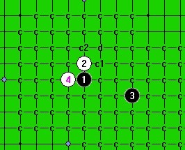
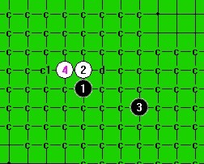

怎么没有新月刀
#1 怎么没有新月刀作者：与郎共五 发表时间：2012-6-11 11:50:55
新月刀一打平衡吗？求最强4.下面一图黑VCT#2 Re:怎么没有新月刀作者：蹲街丶式寂寞 发表时间：2012-6-12 17:04:51
新月刀极少人下，也极少人关注
据我所知一打平衡，类似于超大寒星让人纠结的开局，我没研究没有什么发言权，还请各位妖刀大师来解说下。
［此帖子已被 蹲街丶式寂寞 在 2012-6-12 17:05:49 编辑过］
［ 与郎共五 于 2012-6-13 8:20:06 时花20金币送鲜花一朵］
#3 Re:怎么没有新月刀作者：蹲街丶式寂寞 发表时间：2012-6-12 20:41:25
 今天想试验下新月刀，结果被轻松的剁了。我为楼主做出牺牲了。求花啊。
今天想试验下新月刀，结果被轻松的剁了。我为楼主做出牺牲了。求花啊。
一打还是平衡，看来二打真的不行了。
［此帖子已被 蹲街丶式寂寞 在 2012-6-12 20:44:44 编辑过］
［ 与郎共五 于 2012-6-13 8:18:20 时花20金币送鲜花一朵］
#4 Re:蹲街丶式寂寞【==Re:怎么没有新月刀==】作者：空恨社小仙 发表时间：2012-6-12 22:57:21
两个四都是五手唯一,但两个四的一打都比较纠结复杂.......［ 与郎共五 于 2012-6-13 8:16:58 时花20金币送鲜花一朵］
［ 与郎共五 于 2012-6-13 8:19:40 时花20金币送鲜花一朵］
#5 Re:怎么没有新月刀作者：蹲街丶式寂寞 发表时间：2012-6-13 6:41:02
 小仙给力，我也昨天才做到两个四的唯一的。不过下那些个唯一点，就纠结了，一声叹息啊~~~
小仙给力，我也昨天才做到两个四的唯一的。不过下那些个唯一点，就纠结了，一声叹息啊~~~［ 与郎共五 于 2012-6-13 8:20:30 时花20金币送鲜花一朵］
#6 Re:怎么没有新月刀作者：与郎共五 发表时间：2012-6-13 8:46:35
感觉这刀一打拼内功，如长星。
#7 Re:怎么没有新月刀作者：棋元道 发表时间：2012-7-9 1:18:36
#8 Re:怎么没有新月刀作者：冰糖雪梨 发表时间：2012-7-9 7:53:54
大概就这样吧
［此帖子已被 冰糖雪梨 在 2012-7-9 7:55:14 编辑过］
［ 失落刀 于 2012-7-9 19:13:37 时奖励此帖[金币加 100 威望加1］
#9 Re:棋元道【==Re:怎么没有新月刀==】作者：空恨社小仙 发表时间：2012-7-10 3:59:07
［ 失落刀 于 2012-7-10 6:33:26 时奖励此帖[金币加 100 威望加1］
［ 与郎共五 于 2012-7-11 10:52:26 时花20金币送鲜花一朵］
#10 Re:怎么没有新月刀作者：冰糖雪梨 发表时间：2012-7-10 14:56:04
 小仙，可以摆几个重点变化吗？
小仙，可以摆几个重点变化吗？#11 Re:冰糖雪梨【==Re:怎么没有新月刀==】作者：空恨社小仙 发表时间：2012-7-10 16:09:34
可以的,你有疑问的防点就发图吧,我会回贴的,但这个六后面最强一路变化是我们明教的月光公主地毯的,这点必须说明,我只是坐享其成而已......#12 Re:怎么没有新月刀作者：冰糖雪梨 发表时间：2012-7-10 17:39:53
#13 Re:冰糖雪梨【==Re:怎么没有新月刀==】作者：空恨社小仙 发表时间：2012-7-10 17:47:22
#14 Re:冰糖雪梨【==Re:怎么没有新月刀==】作者：空恨社小仙 发表时间：2012-7-10 17:49:11
［ 冰糖雪梨 于 2012-7-10 18:37:10 时花20金币送鲜花一朵］
［ 与郎共五 于 2012-7-11 10:51:27 时花20金币送鲜花一朵］
#15 Re:怎么没有新月刀作者：棋元道 发表时间：2012-7-11 1:14:59
小仙的6怎么杀？M7和D11杀不出
#16 Re:怎么没有新月刀作者：棋元道 发表时间：2012-7-11 1:24:38
就差M7。。还有另一个4没什么研究#17 Re:怎么没有新月刀作者：冰糖雪梨 发表时间：2012-7-11 8:02:44
受小仙的指点，已经拆完
大概就这样，谢谢小仙的指点
#18 Re:怎么没有新月刀作者：初学棋技 发表时间：2012-8-3 9:26:00
_BASA(@%B$~Y[RD.jpg)
#19 Re:怎么没有新月刀作者：初学棋技 发表时间：2012-8-3 9:32:37
怎么发不了图？我想问一下六楼的图，如果16手不冲四的话，黑是不是就无法胜了？#20 Re:怎么没有新月刀作者：初学棋技 发表时间：2012-8-3 10:18:41
还有我想问一下，一楼的图白8手如果防在H6，黑还能杀吗？有高手帮忙拆一下吗？#21 Re:初学棋技【==Re:怎么没有新月刀==】作者：与郎共五 发表时间：2012-8-4 12:00:15
引用：我认为黑优
原文由 初学棋技 发表于 2012-8-3 9:32:37 :
怎么发不了图？我想问一下六楼的图，如果16手不冲四的话，黑是不是就无法胜了？
#22 Re:初学棋技【==Re:怎么没有新月刀==】作者：与郎共五 发表时间：2012-8-4 12:01:28
引用：我认为白优
原文由 初学棋技 发表于 2012-8-3 10:18:41 :
还有我想问一下，一楼的图白8手如果防在H6，黑还能杀吗？有高手帮忙拆一下吗？
#23 Re:怎么没有新月刀作者：初学棋技 发表时间：2012-8-6 8:18:13
回复与郎共五：原来是这样啊，我还以为黑能杀。那这个4的一打是什么结果啊？有没有哪个5黑能胜？